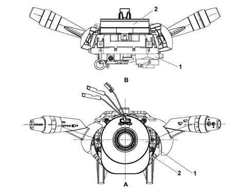
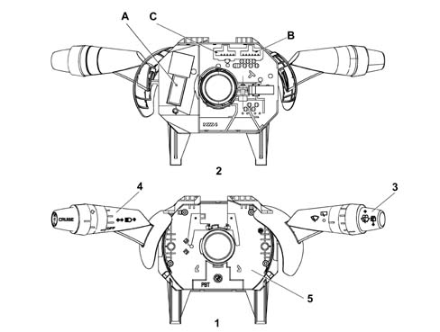
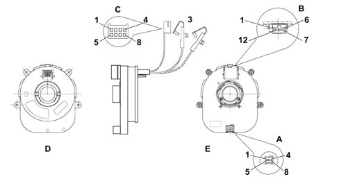
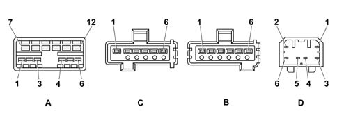

STEERING COLUMN SWITCH UNIT
- Path
- Descriptions > 55 ELECTRICAL EQUIPMENT > 5550 warning and manoeuvring indicators > STEERING COLUMN SWITCH UNIT
- Kind
- system description
- Applies to
- all engines; all production periods
- Interactive page
- https://sloeber94.github.io/elrnDB-lThss/en/#/199312
Applies to: all engines; all production periods
INTRODUCTION
The drawings which follow illustrate the controls which can be used through the steering column switch unit. This applies to both the versions with non Adaptive Cruise Control and with Adaptive Cruise Control.

- A - Perspective view
- B - Front view
- 1 - Steering column switch unit
- 2 - Clock spring
COMPOSITION
The casing
The casing is the part of the steering column switch unit that contains the electrical circuits and the switching and automatic release mechanisms which return the left (direction) lever to the rest position, following the realignment of the steering wheel, after a manoeuvre has been carried out.

- 1 - Front view
- 2 - Rear view
- 3 - Right lever with front wiper controls
- 4 - Left lever with lighting/direction indicators/Cruise Control controls
- 5 - Built in electronic module
- ABC - Connectors
The front section of the CASING houses the CLOCK SPRING which is the interface element with the steering wheel.
The ELECTRONIC MODULE is connected to the CASING, whilst the rear section of the CASING contains the housings for the electrical connectors.
Electronic module
This is the electronic control unit which controls the wiper functions and it is mechanically fastened to the CASING to which it is connected electrically by means of special terminals.
It controls the operation of the:
- windscreen wipers
- windscreen/headlamp washers
- rain sensor
Clock spring
It has two functions:
- to transmit the rotation of the steering wheel to the automatic release mechanism located inside the CASING,
- to transfer the electrical signal for the controls on the steering wheel (horn and other optional services) and to connect the Air Bag module.

- 1 - Front view
- 2 - Rear view
- 3 - Air Bag connectors
- A - Connector joined to dashboard wiring (Steering angle)
- B - Connector joined to dashboard wiring (Air Bag)
- C - Steering wheel node connector
Connector A
Pin | FUNCTION |
|---|---|
1 | + 15 |
2 | earth |
3 | CAN-H |
4 | CAN-H |
5 | + 30 |
6 | not connected |
7 | CAN-I |
8 | CAN-I |
Connector B
Pin | FUNCTION |
|---|---|
1 | earth |
2 | + 30 |
3 | B-CAN B |
4 | B-CAN A |
5 | INT from F49 CPL (+15) |
6 | Steering Wheel Node Earth / steering wheel controls (horn) |
7 | tiptr - |
8 | tiptr + |
9 | airbag 2 - |
10 | airbag 2 + |
11 | airbag 1 - |
12 | airbag 1 + |
Connector C
Pin | FUNCTION |
|---|---|
1 | horn |
2 | not connected |
3 | B-CAN B |
4 | B-CAN A |
5 | + 15 |
6 | Steering Wheel Node Earth (horn) |
Multifunction switch or left lever
This includes the lighting controls (main beam only), direction indicators and controls for the Cruise Control system (the latter varies depending on whether or not the adaptive Cruise Control system is fitted).
Multifunction switch or right lever
This includes the wiper controls. All the controls are activated by operating either the lever or the ring nut on the actual lever.
Steering column switch unit electronic module pin out
The diagram below illustrates the steering column switch unit module connectors

Connector A
Pin | FUNCTION |
|---|---|
1 | Horn relay coil negative signal |
2 | INT from F - 51 Dashboard Control Unit (CPL) for windscreen wash/wipe controls |
3 | Not connected |
4 | Not connected |
5 | Headlamp washer / Wish - Wash enablement positive signal |
6 | Not connected |
7 | Rearscreen wiper negative signal |
8 | Windscreen wiper second speed positive signal |
9 | Windscreen wiper first speed positive signal |
10 | Rearscreen washer pump positive signal |
11 | Analogue signal for rain sensor / wiper intermittent speed |
12 | Windscreen washer pump positive signal |
Connector B
Pin | FUNCTION |
|---|---|
1 | Right direction indicator / parking light negative signal |
2 | Main beam headlamps/flasher negative signal |
3 | Not connected |
4 | Main beam headlamps enablement negative signal from Exterior Lights Control (CLE) |
5 | Not connected |
6 | Not connected |
Connector C
Pin | FUNCTION |
|---|---|
1 | Not connected |
2 | Not connected |
3 | Not connected |
4 | Not connected |
5 | Earth |
6 | Left direction indicators / parking lights control signal |
Connector D
Pin | FUNCTION |
|---|---|
1 | Resume control positive signal |
2 | INT from F - 35 CPL |
3 | Free |
4 | Cruise control on positive signal |
5 | Deceleration (-) control positive signal |
6 | Acceleration (+)/set control positive signal |
Follow me home
This function, which allows the dipped headlamps and the side lights to remain on after the vehicle has been switched off (KEY OFF) with the CLE (Exterior Lights Control Unit) in the PARK or "0" position for 30 seconds or multiples thereof, is activated using the headlamp flasher lever.
For further details see function F048.(See subassembly ) 5505 INSTRUMENT/GAUGE ELECTRICAL CIRCUITS